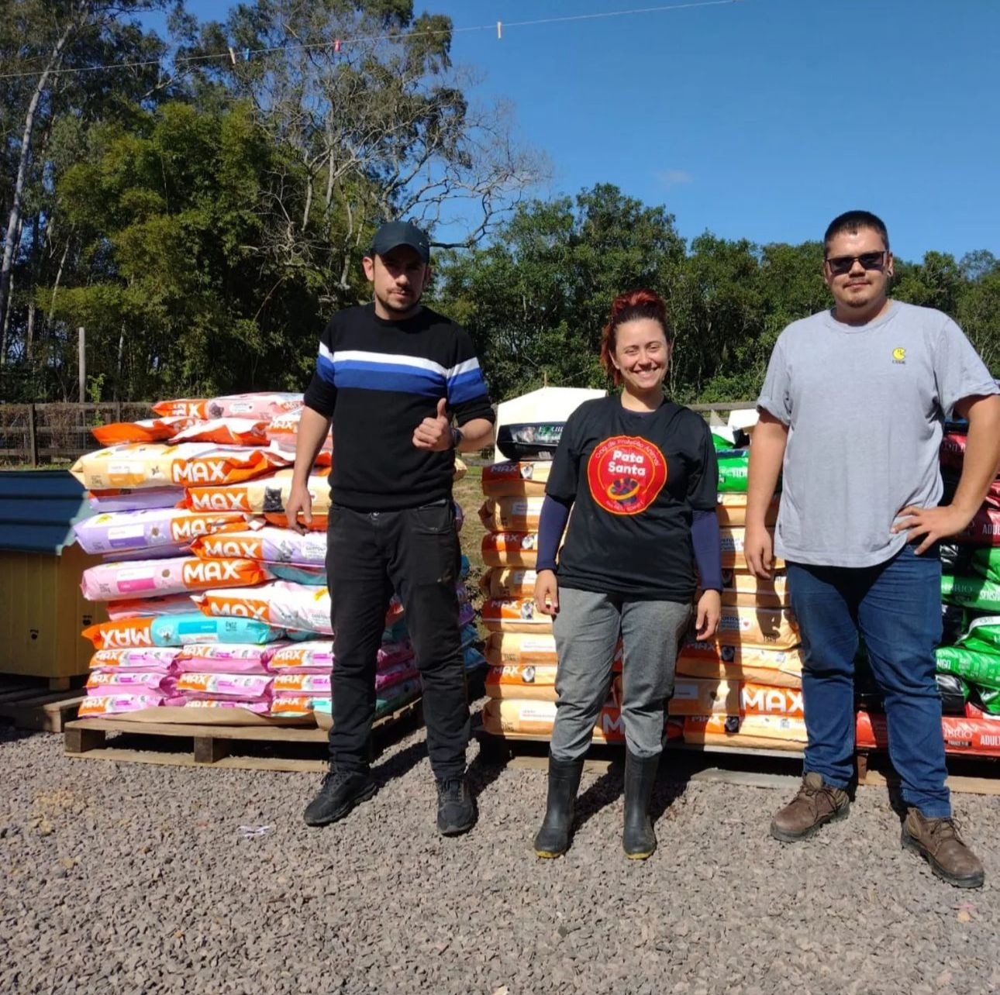

Nos dedicamos a resgatar e cuidar de animais em situação de risco, proporcionando uma nova chance para eles.
Nossa missão é lutar contra o abandono e maus-tratos de animais, oferecendo uma nova chance para cada animal resgatado.
Galeria de Fotos

Equipe PataSanta com doaçõesEquipe/Voluntários da Pata SantaImagem de resgate nas enchentesResgate de animais durante as enchentesRepresentante da ONG